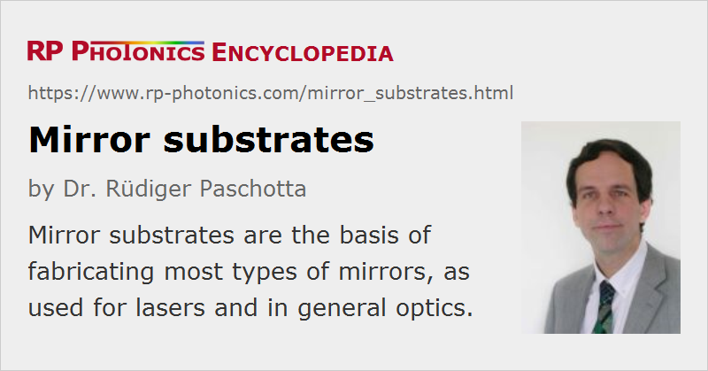

Mirror Substrates
Definition: substrates on which coatings for laser mirrors can be deposited
Alternative term: mirror blanks
German: Spiegelsubstrate
How to cite the article; suggest additional literature
Author: Dr. Rüdiger Paschotta
Laser mirrors and other types of mirrors are generally fabricated by depositing some kind of mirror coating – a dielectric coating or sometimes a metal coating – on a suitable uncoated mirror substrate. In most cases, such a substrate is made of some glass (or sometimes of glass ceramics, rarely of a metal) and has a cylindrical shape. Such a piece with e.g. 25 mm diameter fits into a standard mirror holder, with which the mirror (which may be part of a laser resonator, for example) can be accurately and stably positioned. Rectangular shapes are also available. The front surface and sometimes also the back surface needs to be polished with a high optical quality.
Substrates are sometimes also called mirror blanks, but this can cause confusion, since a blank is usually understood to be a raw part which later needs to be ground and polished.
Mirror substrates can also be used for other optical components such as beam splitters, optical filters and optical windows.
A special case are crystalline mirrors, where a semiconductor mirror structure is epitaxially grown and then sometimes transferred to another substrate.
Fabrication of Mirror Substrates
The fabrication starts with some raw glass (or glass ceramics). It may be delivered in the form of block glass.
One then cuts this into blanks, having roughly the correct shape. CNC machines are often used for cutting. Alternatively, one may use preformed molded blanks.
The edges are often equipped with chamfers, made by grinding or milling, typically before the final grinding and polishing is applied.
One then generates the final surface shape with grinding and optimizes the surface quality with a polishing process. The outer parts (e.g. the cylinder mantle) usually remain ground.
Finally, the substrates need to be cleaned to remove any processing residues, and undergo a final inspection for quality control. This often involves the use of a Twyman–Green interferometer.
The substrate fabrication may be done in the same factory where the mirror coatings are applied, or somewhere else.
Optical flats can also be used as mirror substrates with particularly high flatness.
Properties of Mirror Substrates
Although the actual function of the mirror is performed by the mirror coatings, various properties of the mirror substrate, as discussed in the following, can be relevant in practice.
Dimensions
It is most common to use substrates with a cylindrical shape, apart from some possible surface curvature (see below). Typical diameters are 1 inch (≈25.4 mm) or half an inch (≈12.7 mm), and similar metric sizes like 25.0 mm and 12.5 mm. Even the smaller size is in principle sufficient for most lasers, but particularly in experimental setups it may be more convenient to use the larger size, e.g. for having more freedom in choosing the location of reflection without moving the mirror holder. Various other diameter values are available, such as 4 mm or large ones with 50 mm or more. Even much larger mirrors are made for some special applications – for example, with diameters of several meters for optical telescopes.
The thickness of an ordinary laser mirror substrate with e.g. 25 mm diameter is typically a couple of millimeters – e.g. 6 mm. Thinner substrates are tentatively more difficult to mount in a stable way, e.g. with the standard method using a few screws coming from radial directions. Also, they bend more when exposed to some mechanical forces.
Beyond the nominal dimensions, some mechanical tolerances can be important. For example, in some cases it is vital to have a high degree of parallelity of the end faces, or to have a well defined wedge angle. Generally, a mirror diameter should be precise within ±0.1 mm. It is often important to have some wedge shape for an output coupler mirror, although the exact magnitude of the wedge angle is usually not critical. Tight tolerances can of course substantially increase the production cost and price.
Curvature Radius
Although many mirrors have a flat surface, one often needs mirrors with curved surfaces; a concave curvature causes beam focusing, while a convex curvature leads to a defocusing mirror. For normal incidence, the effective focal length is half the curvature radius; the article on focal length tells how that changes for non-normal incidence. The back side is often flat, but one can also obtain concave–convex substrates, for example.
For curved surfaces, the specified thickness usually applies to the maximum thickness of the substrate – for example, to the center thickness in case of convex curvature.
For strong curvatures, e.g. with a radius of curvature well below 10 mm, it can be difficult to produce high-quality mirror coatings. Some specialists, however, can make good mirrors with radii of the order of 1 mm. One then also requires small non-standard substrates.
Special Shapes
Some applications need mirror substrates with special shapes, e.g. with an elliptical instead of circular shape of the front surface, or with parabolic curvature. One also sometimes needs a mirror with a hole, through which some radiation can be transmitted.
The production of specially shaped substrates often starts with a substrate of standard shape, to which some additional processing steps are applied, e.g. cutting away some parts or drilling holes.
Materials
Various materials are used for mirror substrates, depending on the requirements. Often used substrate materials are borosilicate glasses like BK7 or fused silica, since they are available with high quality at reasonable cost and have good optical quality for the whole visible range and somewhat into the infrared. Other possible choices are other crown and flint glasses, zero thermal expansion glass ceramics (e.g. Zerodur), sapphire and artificial diamond. In some cases, for example for infrared optics, one requires special crystalline materials like calcium fluoride (CaF2) or magnesium fluoride (MgF2).
For highly reflecting mirrors, the optical properties of the substrate material are generally not relevant. One may then consider the following:
- The material should be hard and very rigid (high stiffness). Note that some considerable mechanical forces can arise when the mirror coating is applied, since the coating material will generally not have exactly the same coefficient of thermal expansion as the substrate. The substrate hardness should just not be too strong in order to avoid problems with achieving the required surface quality. Typical optical glasses are good in that respect.
- In some cases, some match of coefficients of thermal expansions can be relevant – for example concerning the substrate and the applied coating. There can be additional details affecting how coatings adhere to the mirror surface.
- For mirrors used in the resonators of high-power lasers, good thermo-optical properties are desirable, namely a high thermal conductivity and a low coefficient of thermal expansion. Otherwise, some heating of the mirror surface by residual absorption of the mirror coating could lead to significant surface deformation, which induces a kind of thermal lensing, typically including substantial aberrations. One sometimes uses zero thermal expansion materials, which however are usually not ideal in terms of thermal conductivity. One should of course also minimize residual absorption of the coating.
- A high chemical stability is of course desirable – for example, insensitivity to humidity. That is given for most mirror substrates, but can be a problem in the context of infrared optics, where quite special materials need to be used.
For partially reflecting mirrors or dichroic mirrors, where light must be transmitted through the substrate, the optical properties are also relevant:
- Usually, one requires a high transmissivity in order not to lose any light, and for high power operation also in order to avoid significant heating.
- The material should also be optically homogeneous to avoid any beam distortions.
The substrate's back side should then usually also be polished with a high quality and may need its own coating (e.g. an anti-reflection coating).
Surface Quality
Most mirror substrates have a standard optical quality, e.g. with a λ/10 surface flatness (with some given test wavelength) and a 10–5 scratch–dig figure.
The surface form tolerance is usually measured with an interferometer, e.g. a Twyman–Green interferometer using green light and a precise optical flat used as a reference surface. The degree of flatness is quantified with the distance between two parallel imaginary planes, where one is tangential to the highest point of the surface and the other one to the lowest point. Non-perfect flatness may simply result from some degree of curvature – which would cause some focusing, but no significant beam distortions – and/or from surface irregularity. One can define surface irregularity by fitting a spherical shape to the actual substrate surface shape and quantifying the difference. Details are defined in industry standards like ISO 10110.
The article on mirrors contains additional details concerning surface quality.
For very large mirror substrates, as required e.g. for astronomical telescopes, it is more difficult to achieve tight surface shape tolerances and consistently high surface quality. Note also that the weight of the substrate itself can easily cause some bending, if this is not compensated by very careful and controlled mounting.
Standard optical quality of substrates is sufficient for most purposes. However, they are superpolished optics with substantially higher surface quality, as required for some special applications, e.g. when extreme reflectivities are needed or when very short wavelengths are involved.
Suppliers
The RP Photonics Buyer's Guide contains 12 suppliers for mirror substrates. Among them:
Questions and Comments from Users
Here you can submit questions and comments. As far as they get accepted by the author, they will appear above this paragraph together with the author’s answer. The author will decide on acceptance based on certain criteria. Essentially, the issue must be of sufficiently broad interest.
Please do not enter personal data here; we would otherwise delete it soon. (See also our privacy declaration.) If you wish to receive personal feedback or consultancy from the author, please contact him e.g. via e-mail.
By submitting the information, you give your consent to the potential publication of your inputs on our website according to our rules. (If you later retract your consent, we will delete those inputs.) As your inputs are first reviewed by the author, they may be published with some delay.
See also: mirrors, dielectric mirrors, optical glasses, optical windows, optical flats
and other articles in the category optical materials
|  |
If you like this page, please share the link with your friends and colleagues, e.g. via social media:
These sharing buttons are implemented in a privacy-friendly way!